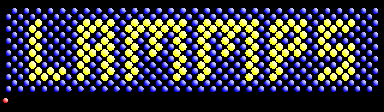

Molecular Dynamics Software¶
Gromacs¶

普通のPCに使えるプログラムの中では最速。生体系を対象としているが、高分子グループでも使われている。汎用性は比較的高く、テーブル関数による相互作用計算が可能。粗視化モデルにも対応。GPUにも対応。解析ツールも充実しており、使いこなせばかなり使い勝手がよいはず。
具体的な使い方は Gromacs を参照してください。
Lammps¶
Sandia National Labで開発されたプログラムであり、クラスターコンピュータで十分な並列効率を保ち、GPUにも対応している。非常に汎用性の高いプログラムであり、様々な境界条件、モデルに対応が可能であり、ポリマーを含む材料系のMD計算では最も利用価値の高いプログラムの一つである。篠田の開発した粗視化モデルも組み込まれており(cg/sdk, 古いlammpsを使っている場合はcg/cmmという名前)、GPUクラスターを用いた高速演算が可能なため、粗視化MDで主に利用している。ソースコードはC++で書かれているが、非常に読みやすく、開発ユーザーが多い。
具体的な使い方は LAMMPS を参照してください。
Namd¶
Illinois大学で開発されているMDプログラムであり、生体系を主な対象とした大規模計算用に開発された老舗プログラム。同グループで開発されたvmdとの連接が非常に良く、interactive MDを実現している。CHARMM力場を標準としているが、OPLSなどの利用も可能。エネルギー最小化などのアルゴリズムが充実。熱浴にはNose-Hooverが利用できず、Langevin熱浴が標準である。Langevin熱浴による分子運動へのartifactが懸念される（詳細は現在調査中）。ソースコードはC++で書かれており公開されているが、よほどのマニア以外は解読を諦めた方がよい。GPUにも対応済み。
篠田グループでは粗視化のための全原子リファレンスデータを取るために利用することが多い。
具体的な使い方は Namd を参照してください。
MPDyn¶
篠田の個人的な汎用プログラムであり、粗視化モデルの開発などもこちらを用いて最初行っていた。並列化効率は高くないので一般的なMDには扱いがよくないが、新しいモデルの開発には扱いが非常に良い。膜系の解析ツールが充実しているため、現在では主にMDのトラジェクトリーの解析プログラムとして利用している。ソースコードはfortran90で書かれており、比較的解読が容易と思われる。
電池のグループで使われている？